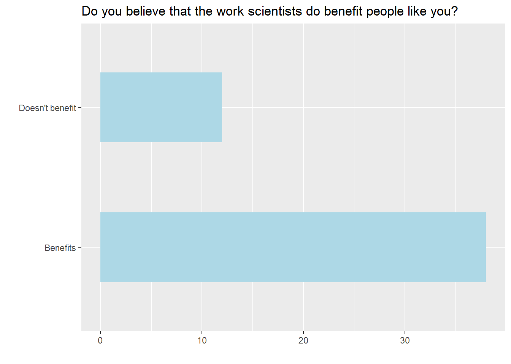
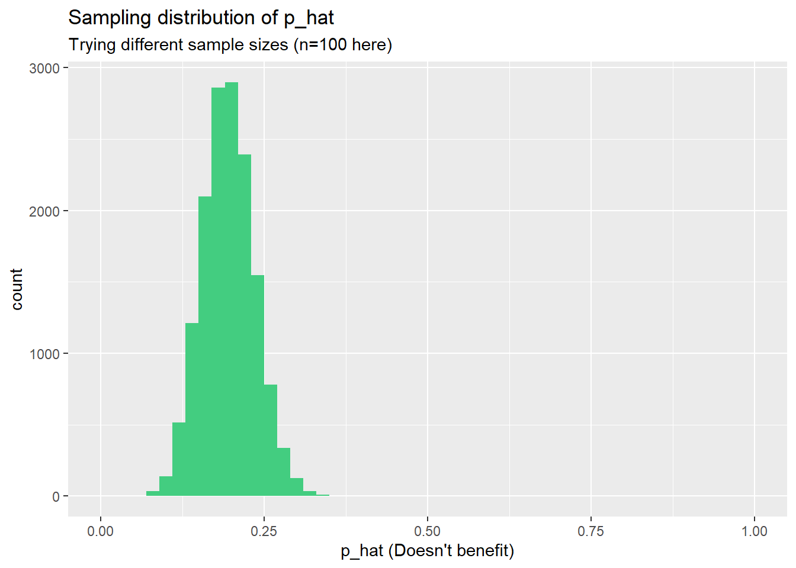
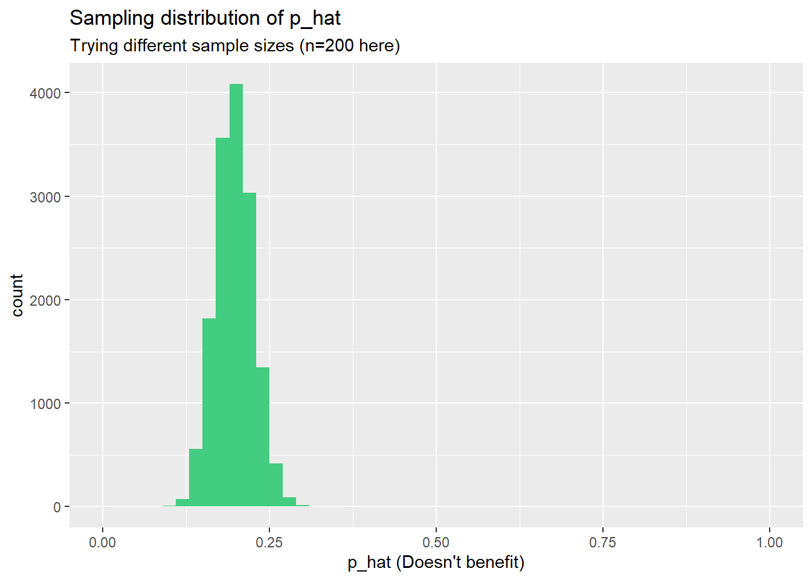

Part 1 - Sampling Distributions
Data

A 2019 Gallup report states the following:
The premise that scientific progress benefits people has been embodied in discoveries throughout the ages -- from the development of vaccinations to the explosion of technology in the past few decades, resulting in billions of supercomputers now resting in the hands and pockets of people worldwide. Still, not everyone around the world feels science benefits them personally.
The Wellcome Global Monitor finds that 20% of people globally do not believe that the work scientists do benefits people like them.
In this lab, we will assume this 20% is a true population proportion and learn about how sample proportions can vary from sample to sample by taking samples from the population. We will first create our population assuming a population size of 100,000 (Which isn't very realistic, but it will serve the purposes of this lab). This means 20,000 (20%) of the population think the work scientists do does not benefit them personally and the remaining 80,000 think it does.
The following piece of code creates the data frame for the responses of the population to the Global Monitor survey.
global_monitor <- tibble(
scientist_work = c(rep("Benefits", 80000), rep("Doesn't benefit", 20000)))tibble is a function in tidyverse that creates a dataset, or "data frame" in R terminology. Within this data frame, the function rep(x, times) replicates the values in x times times. Here, we replicate "Benefits" 80000 times and "Doesn't benefit" 20000 times and coerced all in one vector, as 80% of the population think scientists work benefits them.
The name of the data frame is global_monitor and the name of the variable that contains responses to the question "Do you believe that the work scientists do benefit people like you?" is scientist_work.
What would this line of code return? c(rep(x, 1000), rep(y, 500))
Think about what the rep function does to both components and then when they come together.
Run the following R code to calculate the proportion of people who think that the work scientists do/don't benefit people like them to confirm we constructed the data frame correctly.
global_monitor %>%
count(scientist_work) %>%
mutate(p = n /sum(n))Run the following R code to produce a bar plot to visually demonstrate the distribution of the responses.
ggplot(global_monitor, aes(x = scientist_work)) +
geom_bar(fill = "lightblue", width = 0.5) +
labs(x = "", y = "",
title = "Population counts of beliefs in the work scientists do") +
coord_flip() The function coord_flip flips the coordinates of the plot to create a horizontal bar plot.
Unknown Sampling Distribution
In this data set, we have access to the entire population of 100000 people, but this is almost never the case in real life. Gathering information on an entire population is often extremely costly or impossible. Because of this, we often take a sample of the population and use that to understand the properties of the population.
If you are interested in estimating the proportion of people who don't think the work scientists do benefits them, you can use the sample_n command to survey the population. This following code collects a simple random sample of size 50 from the global_monitor data set, and assigns the result to sample1.
sample1 <- global_monitor %>%
sample_n(50)This is similar to randomly drawing names from a hat that contains the names of everyone in the population. Working with these 50 names is considerably simpler than working with all 100,000 people in the population.
Exercise 1
Write code to produce the summary statistics and a bar plot for the results of the sample.
Although the sample_n function takes a random sample of observations (i.e. rows) from the data set, you can still refer to the variables in the dataset with the same names. Code presented earlier for visualising and summarising the population data will still be useful for the sample, however be careful to not label your proportion p since you're now calculating a sample statistic so use the label p_hat instead.
sample1 %>%
count(scientist_work) %>%
mutate(p_hat = n /sum(n))## # A tibble: 2 x 3
## scientist_work n p_hat
## <chr> <int> <dbl>
## 1 Benefits 38 0.76
## 2 Doesn't benefit 12 0.24ggplot(sample1, aes(x = scientist_work)) +
geom_bar(fill = "lightblue", width = 0.5) +
labs(x = "", y = "", title = "Do you believe that the work scientists do benefit people like you?" ) +
coord_flip()
Think about how the proportions in your sample compare with the distribution of the population. Would you expect the sample distribution to be?
Think about the sample and the distribution it comes from, relate to materials within OpenLearn Section 5.1.
If we're interested in estimating the proportion of all people who do not believe that the work scientists do benefits them, but we do not have access to the population data, our best single guess is the sample mean. We can calculate and display using the following code.
sample1 %>%
count(scientist_work) %>%
mutate(p_hat = n /sum(n))## # A tibble: 2 x 3
## scientist_work n p_hat
## <chr> <int> <dbl>
## 1 Benefits 38 0.76
## 2 Doesn't benefit 12 0.24Depending on the 50 people selected, your estimate could be a bit above or a bit below the population proportion of 0.2. In general, though, the sample proportion turns out to be a pretty good estimate of the true population proportion, and you were able to get it by sampling less than 1% of the population, 50 out of 100000.
Would you expect the sample proportion to match the sample proportion of another student's sample?
As the sample is taken randomly from the population you would expect it to be slightly similar to other draws.
Exercise 2
Take a second sample, also of size 50, and call it sample2. Compare the proportion of people who do not believe that the work scientists do benefits them in sample1 and sample2.
Create the sample from global_monitor using the function sample_n(). Calculate p_hat by using the functions count() and mutate().
sample2 <- global_monitor %>%
sample_n(50)
sample2 %>%
count(scientist_work) %>%
mutate(p_hat = n /sum(n))## # A tibble: 2 x 3
## scientist_work n p_hat
## <chr> <int> <dbl>
## 1 Benefits 40 0.8
## 2 Doesn't benefit 10 0.2Create 2 more samples, of size 100 and 1000 calling them sample3 and sample4, and compare the proportion of people who do not believe that the work scientists do benefits them across all four samples.
sample3 and sample4, and their respective estimates of the population proportion p_hat, are created exactly the same way as sample1 and sample2, all that needs changed is the size of the sample within sample_n().
sample3 <- global_monitor %>%
sample_n(100)
sample3 %>%
count(scientist_work) %>%
mutate(p_hat = n /sum(n))## # A tibble: 2 x 3
## scientist_work n p_hat
## <chr> <int> <dbl>
## 1 Benefits 78 0.78
## 2 Doesn't benefit 22 0.22sample4 <- global_monitor %>%
sample_n(1000)
sample4 %>%
count(scientist_work) %>%
mutate(p_hat = n /sum(n))## # A tibble: 2 x 3
## scientist_work n p_hat
## <chr> <int> <dbl>
## 1 Benefits 793 0.793
## 2 Doesn't benefit 207 0.207Looking at the new samples, of size 100 and 1000. Which would you think would provide a more precise estimate of the population mean?
Think about which sample contains the most information and therefore will be, on average, closer to the true population proportion.
Not surprisingly, every time we take another random sample, you might get a different sample proportion. It's useful to get a sense of just how much variability in the sample proportions we should expect from sample to sample when estimating the population mean proportion in this way. The distribution of sample proportions, called the sampling distribution (of the proportion), can help us understand this variability. See Section 5.1.2 OpenIntro Page 181
Remember that in this lab we unusually had access to the population and therefore we can get an idea of the sampling distribution for the sample proportion by repeating the above steps many times.
Here, we use the function rep_sample_n to take 15,000 different samples of size 50 from the population, calculate the proportion of Science doesn't benefit responses in each sample and store each result in a vector called sample_props50. The distribution of the proportions can then be visualised with a histogram.
Note We specify that replace = TRUE since sampling distributions are constructed by sampling with replacement.
Exercise 3
Run the following code to iterate 15000 samples of size 50 from the population.
sample_props50 <- global_monitor %>%
rep_sample_n(size = 50, reps = 15000, replace = TRUE) %>%
count(scientist_work) %>%
mutate(p_hat = n /sum(n)) %>%
filter(scientist_work == "Doesn't benefit")
ggplot(data = sample_props50, aes(x = p_hat)) +
geom_histogram(binwidth = 0.05, fill = "seagreen3") +
labs(x = "p_hat (Doesn't benefit)",
title = "Sampling distribution of p_hat",
subtitle = "Sample size = 50, Number of samples = 150")If you would like to adjust the bin width of your histogram to show a little more detail, you can do so by changing the binwidth argument in geom_histogram.
How many elements are there in sample_props50?
Think about how many iterations were computed and how they are stored.
What distribution does the shape of the histogram most resemble?
Think about the shape of the histogram and the distributions you are familiar with.
Exercise 4
Try changing the number of iterations carried out to see the effect this might have on the distribution. Start with 500 iterations and then increase.
sample_props50 <- global_monitor %>%
rep_sample_n(size = 50, reps = 500, replace = TRUE) %>%
count(scientist_work) %>%
mutate(p_hat = n /sum(n)) %>%
filter(scientist_work == "Doesn't benefit")
ggplot(data = sample_props50, aes(x = p_hat)) +
geom_histogram(binwidth = 0.05, fill = "seagreen3") +
labs(x = "p_hat (Doesn't benefit)",
title = "Sampling distribution of p_hat",
subtitle = "Sample size = 50")Would you expect the distribution to change if 50,000 samples were collected?
Think about what more data would add to the overall shape. Try it out by changing the number of reps in the task above.
Sample Size and Sampling Distribution
Computing a sampling distribution, specifically, the sampling distribution of the proportions from samples of 50 people results in the following histogram.

The sampling distribution that you computed tells you much about estimating the true proportion of people who think that the work scientists do doesn't benefit them.
Because the sample proportion is an unbiased estimator, the sampling distribution is centered at the true population proportion, and the spread of the distribution indicates how much variability is incurred by sampling only 50 people at a time from the population.
Effect of Sample Size on Sampling Distribution
Now we will work on getting a sense of the effect that sample size has on the sampling distribution.
Exercise 5
Try changing the sample size to see the effect this might have on the distribution. Start with a sample size of 50 and then increase it to see the effect (e.g. double it, then double it again).
sample_props <- global_monitor %>%
rep_sample_n(size = 50, reps = 15000, replace = TRUE) %>%
count(scientist_work) %>%
mutate(p_hat = n /sum(n)) %>%
filter(scientist_work == "Doesn't benefit")
ggplot(data = sample_props, aes(x = p_hat)) +
geom_histogram(binwidth = 0.02, fill = "seagreen3") +
xlim(0, 1) +
labs(x = "p_hat (Doesn't benefit)",
title = "Sampling distribution of p_hat",
subtitle = "Trying different sample sizes")Run the code as it is to see the results for n = 50 then change this value of 50 to 100 i.e. rep_sample_n(size = 100) then run the code. Repeat for n = 200
sample_props <- global_monitor %>%
rep_sample_n(size = 100, reps = 15000, replace = TRUE) %>%
count(scientist_work) %>%
mutate(p_hat = n /sum(n)) %>%
filter(scientist_work == "Doesn't benefit")
ggplot(data = sample_props, aes(x = p_hat)) +
geom_histogram(binwidth = 0.02, fill = "seagreen3") +
xlim(0, 1) +
labs(x = "p_hat (Doesn't benefit)",
title = "Sampling distribution of p_hat",
subtitle = "Trying different sample sizes (n=100 here)")
sample_props <- global_monitor %>%
rep_sample_n(size = 200, reps = 15000, replace = TRUE) %>%
count(scientist_work) %>%
mutate(p_hat = n /sum(n)) %>%
filter(scientist_work == "Doesn't benefit")
ggplot(data = sample_props, aes(x = p_hat)) +
geom_histogram(binwidth = 0.02, fill = "seagreen3") +
xlim(0, 1) +
labs(x = "p_hat (Doesn't benefit)",
title = "Sampling distribution of p_hat",
subtitle = "Trying different sample sizes (n=200 here)")
When the sample size is larger, what happens to the center?
Try increasing the sample size value above and try various values to see the change in histogram.
When the sample size is larger, what happens to the spread?
Try increasing the sample size value above and try various values to see the change in histogram.